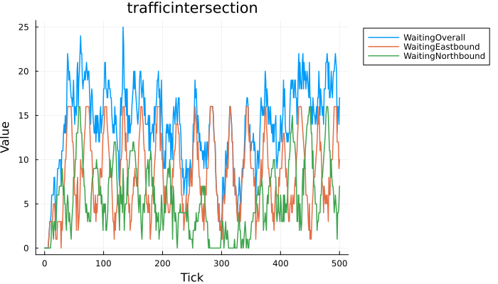
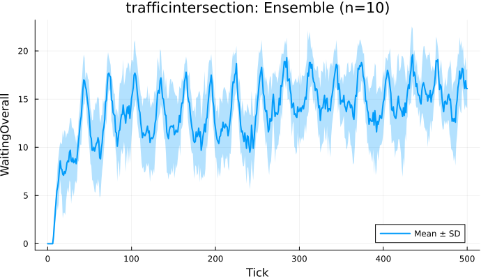
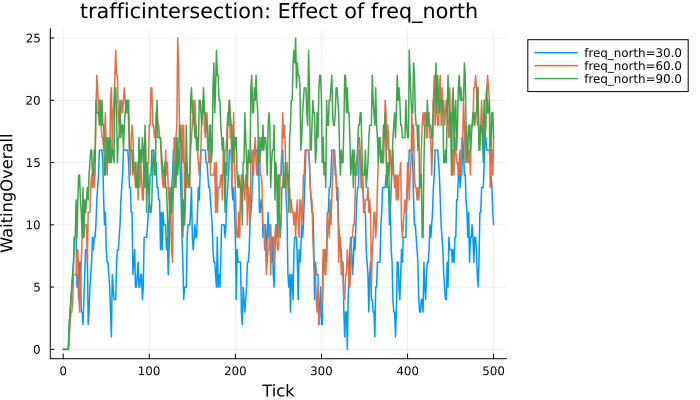

Traffic Intersection
Overview
WHAT IS IT?
In this model the turtles are cars traveling through an intersection. The user has the ability to control the frequency of cars coming from each direction, the speed of the cars, and the timing of the light at the traffic intersection. Once the frequency and speed of cars is selected, the user should run the simulation and adjust the timing of the traffic light so as to minimize the amount of waiting time of cars traveling through the intersection.
HOW IT WORKS
The rules for each car are:
I can only go in the direction I started in, or stop.
I stop for cars in front of me and red lights, and I stop for a yellow light if I’m not already on it.
If I am moving quickly and I see that I will have to stop soon, I try to slow down enough to make sure I can stop in time, up to MAX-BRAKE.
If I see that I have free space in front of me, I speed up towards the SPEED-LIMIT, up to MAX-ACCEL.
If I am on the same space as another car, we crash and die.
THINGS TO NOTICE
Cars start out evenly spaced but over time, they form bunches. What kinds of patterns appear in the traffic flow?
Under what conditions do the cars appear to be moving backwards?
Gridlock happens when cars are unable to move because cars from the other direction are in their path. What settings cause gridlock in this model? What settings can be changed to end the gridlock?
THINGS TO TRY
Try to answer the following questions before running the simulations.
Record your predictions.
Compare your predicted results with the actual results.
What reasoning led you to correct predictions?
What assumptions that you made need to be revised?
Try different numbers of eastbound cars while keeping all other slider values the same.
Try different numbers of northbound cars while keeping all other slider values the same.
Try different values of SPEED-LIMIT while keeping all other slider values the same.
Try different values of MAX-ACCEL while keeping all other slider values the same.
Try different values of GREEN-LENGTH and YELLOW-LENGTH while keeping all other slider values the same.
For all of the above cases, consider the following:
What happens to the waiting time of eastbound cars?
What happens to the waiting time of northbound cars?
What happens to the overall waiting time?
What generalizations can you make about the impact of each variable on the waiting time of cars?
What kind of relationship exists between the number of cars and the waiting time they experience?
What kind of relationship exists between the speed of cars and the waiting time they experience?
What kind of relationship exists between the number of ticks of green light and the waiting time cars experience?
Use your answers to the above questions to come up with a strategy for minimizing the waiting time of cars.
What factor (or combination of factors) has the most influence over the waiting time experienced by the cars?
EXTENDING THE MODEL
Find a realistic way to eliminate all crashes by only changing car behavior.
Allow different light lengths for each direction in order to control wait time better.
Is there a better way to measure the efficiency of an intersection than the current number of stopped cars?
RELATED MODELS
“Traffic Basic”: a simple model of the movement of cars on a highway.
“Traffic Basic Utility”: a version of “Traffic Basic” including a utility function for the cars.
“Traffic Basic Adaptive”: a version of “Traffic Basic” where cars adapt their acceleration to try and maintain a smooth flow of traffic.
“Traffic Basic Adaptive Individuals”: a version of “Traffic Basic Adaptive” where each car adapts individually, instead of all cars adapting in unison.
“Traffic 2 Lanes”: a more sophisticated two-lane version of the “Traffic Basic” model.
“Traffic Grid”: a model of traffic moving in a city grid, with stoplights at the intersections.
“Traffic Grid Goal”: a version of “Traffic Grid” where the cars have goals, namely to drive to and from work.
“Gridlock HubNet”: a version of “Traffic Grid” where students control traffic lights in real-time.
“Gridlock Alternate HubNet”: a version of “Gridlock HubNet” where students can enter NetLogo code to plot custom metrics.
HOW TO CITE
If you mention this model or the NetLogo software in a publication, we ask that you include the citations below.
For the model itself:
- Wilensky, U. (1998). NetLogo Traffic Intersection model. http://ccl.northwestern.edu/netlogo/models/TrafficIntersection. Center for Connected Learning and Computer-Based Modeling, Northwestern University, Evanston, IL.
Please cite the NetLogo software as:
- Wilensky, U. (1999). NetLogo. http://ccl.northwestern.edu/netlogo/. Center for Connected Learning and Computer-Based Modeling, Northwestern University, Evanston, IL.
COPYRIGHT AND LICENSE
Copyright 1998 Uri Wilensky.

This model is licensed under the Creative Commons Attribution-NonCommercial-ShareAlike 3.0 License. To view a copy of this license, visit https://creativecommons.org/licenses/by-nc-sa/3.0/ or send a letter to Creative Commons, 559 Nathan Abbott Way, Stanford, California 94305, USA.
NetLogo itself is free software for non-commercial use under the terms of the GNU General Public License (see full license information here).
To inquire about commercial licenses for either NetLogo or specific models from the models library, please contact netlogo-commercial-admin@ccl.northwestern.edu.
This model was created as part of the project: CONNECTED MATHEMATICS: MAKING SENSE OF COMPLEX PHENOMENA THROUGH BUILDING OBJECT-BASED PARALLEL MODELS (OBPML). The project gratefully acknowledges the support of the National Science Foundation (Applications of Advanced Technologies Program) – grant numbers RED #9552950 and REC #9632612.
This model was converted to NetLogo as part of the projects: PARTICIPATORY SIMULATIONS: NETWORK-BASED DESIGN FOR SYSTEMS LEARNING IN CLASSROOMS and/or INTEGRATED SIMULATION AND MODELING ENVIRONMENT. The project gratefully acknowledges the support of the National Science Foundation (REPP & ROLE programs) – grant numbers REC #9814682 and REC-0126227. Converted from StarLogoT to NetLogo, 2002.
Parameters
| Parameter | Type | Default | Description |
|---|---|---|---|
freq_north | Float64 | 60.0 | percent chance new car from north |
freq_east | Float64 | 100.0 | percent chance new car from east |
speed_limit | Int | 5 | speed limit |
max_accel | Int | 2 | max accel |
max_brake | Int | 4 | max brake |
green_length | Int | 12 | green length |
yellow_length | Int | 3 | yellow length |
auto | Bool | true | auto |
grid_size | Int | 35 | -17..17 = 35 |
max_ticks | Int | 500 | max ticks |
Source Code
The Julia code to run this model:
using ArkModelZoo
_, trajectory = run_trafficintersection()Time Series

Ensemble Runs
Ten replicates with different random seeds, showing mean ± standard deviation.

Parameter Sensitivity
Varying freq_north.

Appendix: Source Code
This model is implemented in the Ark.jl Entity-Component-System (ECS) framework. The code is split into five files, each with a distinct role:
- Parameters: a mutable struct holding all configurable values.
- Components: lightweight data types attached to individual entities (agents).
- Resources: world-level shared state accessible to all systems.
- Systems: functions that operate on entities each tick, defining model behavior.
- Model: wiring that assembles the world, registers resources and systems, and provides the run entry point.
Parameters (parameters.jl)
The parameter struct uses @kwdef so that every field has a default value and can be overridden by keyword. These defaults match the original NetLogo model’s slider settings.
Base.@kwdef mutable struct TIParams
freq_north::Float64 = 60.0 # percent chance new car from north
freq_east::Float64 = 100.0 # percent chance new car from east
speed_limit::Int = 5
max_accel::Int = 2
max_brake::Int = 4
green_length::Int = 12
yellow_length::Int = 3
auto::Bool = true
grid_size::Int = 35 # -17..17 = 35
max_ticks::Int = 500
seed::Int = 42
endComponents (components.jl)
Components are lightweight data types attached to individual entities (agents). Mutable structs hold per-entity state, while empty tag structs act as markers for the ECS query system to efficiently filter entities.
mutable struct TICar
x::Int
y::Int
heading::Int # 0=north, 90=east
speed::Int
end
TICar() = TICar(0, 0, 0, 0)Resources (resources.jl)
Resources are world-level singletons shared across all systems, used for global state and aggregate statistics.
mutable struct TIRoad
size::Int
# Road: patches where |x - center| <= 1 or |y - center| <= 1
# Signal state
stop_light::Symbol # :north or :east (which direction has green)
# Grid of occupancy
occupancy::Matrix{Entity}
# Accident patches: countdown timer (0 = clear)
accidents::Matrix{Int}
end
function TIRoad(sz::Int)
TIRoad(sz, :north, fill(zero_entity, sz, sz), zeros(Int, sz, sz))
end
mutable struct TIStats
waiting_overall::Int
waiting_eastbound::Int
waiting_northbound::Int
num_collisions::Int
end
TIStats() = TIStats(0, 0, 0, 0)Systems (systems.jl)
Systems contain the model logic and execute in a defined order each tick. Each system struct implements either initialize! (run once at setup) or update! (run every tick).
# --- Initialization ---
struct InitTISystem <: System end
function initialize!(::InitTISystem, world::World)
params = get_resource(world, TIParams)
road = get_resource(world, TIRoad)
road.stop_light = :north
_ti_update_stats!(world)
return nothing
end
function _ti_is_road(sz::Int, x::Int, y::Int)
center = (sz + 1) ÷ 2
return abs(x - center) <= 1 || abs(y - center) <= 1
end
function _ti_is_intersection(sz::Int, x::Int, y::Int)
center = (sz + 1) ÷ 2
return abs(x - center) <= 1 && abs(y - center) <= 1
end
function _ti_update_stats!(world::World)
stats = get_resource(world, TIStats)
waiting = 0
waiting_e = 0
waiting_n = 0
for (_, cars) in Query(world, (TICar,))
@inbounds for i in eachindex(cars)
c = cars[i]
if c.speed == 0
waiting += 1
if c.heading == 90
waiting_e += 1
elseif c.heading == 0
waiting_n += 1
end
end
end
end
stats.waiting_overall = waiting
stats.waiting_eastbound = waiting_e
stats.waiting_northbound = waiting_n
end
# --- Helpers ---
@inline function _ti_heading_delta(heading::Int)
heading == 0 ? (0, 1) : (1, 0)
end
# NetLogo signal patches:
# stop_light="north" → patch (0,-1)=red, patch (-1,0)=green (north STOPPED)
# stop_light="east" → patch (0,-1)=green, patch (-1,0)=red (east STOPPED)
# In Ark coords (center=18): (0,-1)=(center, center-1)=(18,17), (-1,0)=(center-1, center)=(17,18)
#
# The OLD Ark convention: stop_light=:north means "north has GREEN" (opposite of NL).
# Combined with switch-at-start + tick>0 guard, the signal timing is accidentally correct.
# We keep the OLD convention and just fix the red-patch check to match NL's single-patch behavior.
#
# OLD :north (north GREEN, east RED) matches NL "east" → red at (-1,0) = Ark (17,18)
# OLD :east (east GREEN, north RED) matches NL "north" → red at (0,-1) = Ark (18,17)
@inline function _ti_is_red_patch(road::TIRoad, center::Int, x::Int, y::Int)
if road.stop_light == :north
# East is stopped → red at Ark (center-1, center) = NL (-1, 0)
return x == center - 1 && y == center
else
# North is stopped → red at Ark (center, center-1) = NL (0, -1)
return x == center && y == center - 1
end
end
# NetLogo clear-ahead: look max-accel + speed patches ahead.
# Reports distance to first obstacle (red patch, orange/accident, or turtle).
function _ti_clear_ahead(car::TICar, road::TIRoad, params::TIParams, sz::Int)
return _ti_clear_ahead_at(car.x, car.y, car.heading, car.speed, road, params, sz)
end
function _ti_clear_ahead_at(x::Int, y::Int, heading::Int, speed::Int,
road::TIRoad, params::TIParams, sz::Int)
dx, dy = _ti_heading_delta(heading)
center = (sz + 1) ÷ 2
n = 1
max_look = params.max_accel + speed
for _ in 1:max_look
nx, ny = x + n * dx, y + n * dy
if nx < 1 || nx > sz || ny < 1 || ny > sz
break
end
if _ti_is_red_patch(road, center, nx, ny) ||
road.accidents[nx, ny] > 0 ||
!is_zero(road.occupancy[nx, ny])
return n
end
n += 1
end
return n
end
# --- Go ---
struct TIGoSystem <: System end
function update!(::TIGoSystem, world::World)
params = get_resource(world, TIParams)
rng = get_resource(world, RNGResource).rng
road = get_resource(world, TIRoad)
stats = get_resource(world, TIStats)
sz = road.size
tick_val = get_resource(world, Tick).tick
center = (sz + 1) ÷ 2
# Switch light FIRST (OLD order — accidentally correct with OLD signal semantics)
if params.auto
cycle = params.green_length + params.yellow_length
if cycle > 0 && tick_val % cycle == 0 && tick_val > 0
road.stop_light = road.stop_light == :north ? :east : :north
end
end
# ── 1. move-cars: ask turtles [move] then check-for-collisions ──
car_list = Tuple{Entity, Int}[]
for (eids, cars) in Query(world, (TICar,))
@inbounds for i in eachindex(cars)
push!(car_list, (eids[i], i))
end
end
Random.shuffle!(rng, car_list)
dead_set = Set{Entity}()
for (eid, _) in car_list
eid in dead_set && continue
car_comp = try
get_components(world, eid, (TICar,))
catch
nothing
end
(car_comp === nothing || isempty(car_comp)) && continue
car = car_comp[1]
# clear-ahead
clear = _ti_clear_ahead(car, road, params, sz)
# Speed adjustment (matches NetLogo move procedure)
if clear > car.speed
if car.speed < params.speed_limit
car.speed = car.speed + min(params.max_accel, clear - 1 - car.speed)
end
if car.speed > params.speed_limit
car.speed = params.speed_limit
end
else
car.speed = car.speed - min(params.max_brake, car.speed - (clear - 1))
if car.speed < 0; car.speed = 0; end
end
# Move: repeat speed [fd 1; if not can-move? 1 [die]; if pcolor = orange [die]]
if road.occupancy[car.x, car.y] == eid
road.occupancy[car.x, car.y] = zero_entity
end
alive = true
for _ in 1:car.speed
dx, dy = _ti_heading_delta(car.heading)
nx, ny = car.x + dx, car.y + dy
if nx < 1 || nx > sz || ny < 1 || ny > sz
push!(dead_set, eid)
alive = false
break
end
if road.accidents[nx, ny] > 0
road.accidents[nx, ny] = 5
push!(dead_set, eid)
alive = false
break
end
car.x = nx
car.y = ny
# can-move? 1: check if NEXT step would be off-grid
nnx, nny = nx + dx, ny + dy
if nnx < 1 || nnx > sz || nny < 1 || nny > sz
push!(dead_set, eid)
alive = false
break
end
end
if alive
# Inline collision: if another car already at this position
if !is_zero(road.occupancy[car.x, car.y]) && road.occupancy[car.x, car.y] != eid
other = road.occupancy[car.x, car.y]
road.accidents[car.x, car.y] = 5
road.occupancy[car.x, car.y] = zero_entity
push!(dead_set, other)
push!(dead_set, eid)
else
road.occupancy[car.x, car.y] = eid
end
end
end
# check-for-collisions: decay old accidents
for i in eachindex(road.accidents)
if road.accidents[i] > 0
road.accidents[i] -= 1
end
end
# Remove dead cars
for eid in dead_set
car_comp = try
get_components(world, eid, (TICar,))
catch
nothing
end
if car_comp !== nothing && !isempty(car_comp)
c = car_comp[1]
if c.x >= 1 && c.x <= sz && c.y >= 1 && c.y <= sz
if road.occupancy[c.x, c.y] == eid
road.occupancy[c.x, c.y] = zero_entity
end
end
end
try
remove_entity!(world, eid)
catch
end
end
# ── 2. make-new-cars ──
if rand(rng) * 100.0 < params.freq_north
spawn_x = center
spawn_y = 1
if is_zero(road.occupancy[spawn_x, spawn_y])
spd = min(_ti_clear_ahead_at(spawn_x, spawn_y, 0, 0, road, params, sz),
params.speed_limit)
eid = new_entity!(world, (TICar(spawn_x, spawn_y, 0, spd),))
road.occupancy[spawn_x, spawn_y] = eid
end
end
if rand(rng) * 100.0 < params.freq_east
spawn_x = 1
spawn_y = center
if is_zero(road.occupancy[spawn_x, spawn_y])
spd = min(_ti_clear_ahead_at(spawn_x, spawn_y, 90, 0, road, params, sz),
params.speed_limit)
eid = new_entity!(world, (TICar(spawn_x, spawn_y, 90, spd),))
road.occupancy[spawn_x, spawn_y] = eid
end
end
# ── 3. Update stats ──
_ti_update_stats!(world)
return nothing
end
# --- Termination ---
struct TITerminationSystem <: System end
function update!(::TITerminationSystem, world::World)
params = get_resource(world, TIParams)
tick = get_resource(world, Tick)
if tick.tick + 1 >= params.max_ticks
get_resource(world, Terminate).stop = true
end
return nothing
endModel (model.jl)
The model file assembles all pieces: it creates the ECS World with the required component types, registers resources, builds the Scheduler with systems in execution order, and exposes the public run entry point. The observer pattern records the trajectory each tick.
function trafficintersection_world(; initial_capacity::Int = 4096)
return World(TICar; initial_capacity = initial_capacity, allow_mutable = true)
end
function trafficintersection_systems()
return (InitTISystem(), TIGoSystem(), TITerminationSystem())
end
function trafficintersection_model(params::TIParams = TIParams())
world = trafficintersection_world()
_add_standard_resources!(world, params)
add_resource!(world, TIRoad(params.grid_size))
add_resource!(world, TIStats())
scheduler = Scheduler(world, trafficintersection_systems())
initialize!(scheduler)
return scheduler
end
struct TIObserver end
function trafficintersection_headers(::TIObserver)
return ["WaitingOverall", "WaitingEastbound", "WaitingNorthbound"]
end
function trafficintersection_values(::TIObserver, world::World)
stats = get_resource(world, TIStats)
return Float64[Float64(stats.waiting_overall), Float64(stats.waiting_eastbound), Float64(stats.waiting_northbound)]
end
function run_trafficintersection(; params::TIParams = TIParams(), observe::Bool = true)
return _run_model(trafficintersection_model, TIObserver(), trafficintersection_values; params, observe)
end